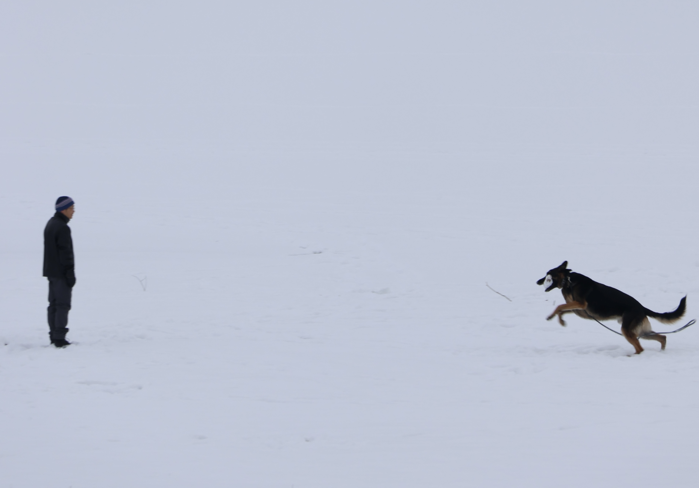
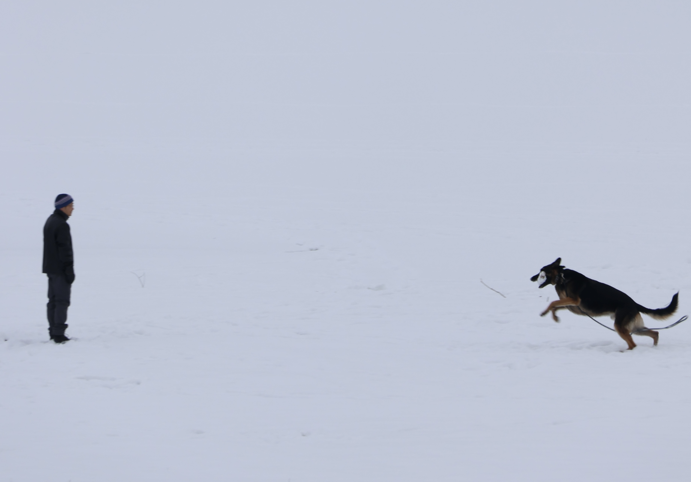

Urban Coastline
The city embodies industry, innovation and constant movement, while the water symbolizes timelessness, tranquility and depth.
Capturing genuine moments and turning them into compelling stories.

The city embodies industry, innovation and constant movement, while the water symbolizes timelessness, tranquility and depth.

The silence of the pier contrasts with the warm colors of the sunset, conveying a sense of loneliness yet peacefulness.

Cool tones and hard lines evoke a calm feeling for the city, giving it unique character and authenticity.


 


Showcasing products with clarity, style, and market appeal.